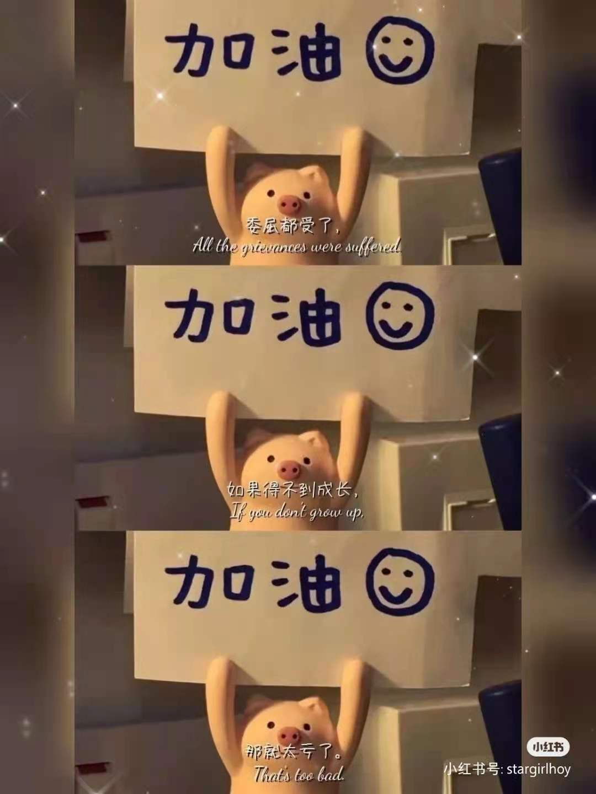
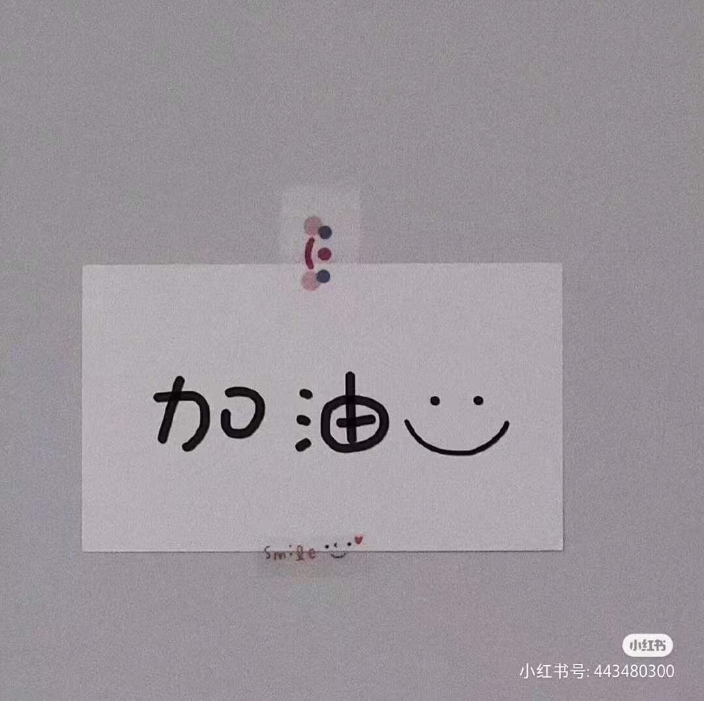

SSQ
有人说过这样一句话：“生命以时间为载体，以贡献的多少反映其价值，生命的境界取决于后者而非前者。”每个人能掌握的是生与死之间的这一段生命，而让生命具有意义，不是在开始或结束，而是在其过程中，从这个意义上讲，无论高峰或低谷，都是生命的成长，都值得我们珍惜和回味。
我生长在辽宁省抚顺市清原县一个美丽淳朴的农村家庭。家里共有6人，父母都是地地道道的农民，勤劳朴实。父亲是个幽默、多才多艺、见识广、有责任感的人，是在我童年的成长中对我影响最大的人。母亲是个贤惠能干、心灵手巧的女强人，在我的成长中她一直充当着严母的角色，我做错了事大都是母亲批评我，所以在成长的过程中与母亲的关系并不是很好，上了高中后才渐渐领悟到父母的用心良苦，现在与父母的关系变得特别融洽愉快，一家人很幸福。家中小妹，聪明活泼、懂事听话为我们家增添了更多的幸福感。我从她小时候就一直十分疼爱她,现在总是感觉她就是我的情感寄托，是我生命的一部分，学习成绩也特别好，是全家人的骄傲，所以一家人倍加呵护她。
由于父母为生活奔波忙碌，童年的我几乎是在奶奶家长大的。因此也锻炼了我非常独立的能力。奶奶的“文化程度”较高，很懂得育人之道，教给我做人做事的道理，从小就锻炼我各种生活的技能和本
领。当时并不觉的那样做事很有用处，长大以后才慢慢的体味出那其中的道理。在童年的记忆里，姥姥
仿佛是一个永远不会累、特别厉害的人，无论遇到什么问题她都能解决，总是让我特别佩服她，她就是
我小时候的偶像与榜样。童年的经历，是我人生中最快乐，最无忧无虑的时光。
|  |  |
慢慢到了上学的年龄，没有经历幼儿园的洗礼就开始了我的学习生涯。小学时，母亲对我要求很
严，再加上奶奶在上学前的教授，我的学习成绩一直很不错。中学时，开始了住校的生活，深深感受到了三点一线的生活，学习很努力，成绩还可以。
带着梦想和激情，开启了四年充实的大学生活。我非常热爱自己的专业，一直为自己的幸运而努力。所以，大学里的学习成绩比较不错，入学以来综合测评名次都是班级第一名。各种奖学金也随之而来了，这些荣誉给了我很大的鼓励，同时也给了我继续向前的动力。生活中我积极参加各项活动，不断提高自己的专业技能。性格外向的我还结交了很多好朋友，我珍惜生活给予我的一切，努力奋斗着，为未来时刻准备着。
我是一个比较喜欢安静的人，相对于热闹的场合，我更喜欢静静地呆在自己的小空间里，或者看书，或者听歌，总之安静就好。对于一些事情，我更喜欢通过行动来表达自己的看法而不是通过语言。大多数人对我的第一印象是觉着我属于温柔型的女生，不过，深入了解我的话，会发现我很开朗，用同学的话讲，我也会很豪放。性格上，有些内秀，不大习惯在众人面前展示自己，这是我性格方面的弱点之一吧，因为现在的社会需要外向，能够展示自己的人更多一些。我的优点很多，缺点也很多。我做事比较认真，只要是自己决定去做的事情，我都会踏踏实实地去完成，力求尽善尽美。而且，我对人真诚实在，如果我交下的朋友遇到困难，我会没有条件创造条件也要去帮忙。此外，善良、有爱心同情心等等，我相信我都做到了这些。至于缺点，最大的一个是我依赖性比较强，不够独立，不够坚强。有时候遇见困难，我会退缩，不能坚决地去克服。还有，惰性比较大，不够勤奋，自制力也有待提高，执行力欠缺，有时制定了计划不能做到严格执行。
……
回顾近三年的大学生活，我在很多方面获得了成长。慢慢地，我发现离开了父母，我也是能做好多事情的。我发现我可以很好地照顾自己，或许因为之前一直在父母的呵护下，自立的能力没有被发掘出来吧。我学会了自立与坚强，遇事自己想法解决，而不再是像以前那样求助于人。而且，经过这一学期，我也收获了友谊，我们也会互相鼓励，互相支持，共同拼搏。其实，我更加认同了一句话，在大学里有时要学会一个人，在某种程度上这意味着我们不是孩子了，该有自己的思想，学会管理自己了。对于学习上遇到的困难，语音方面，没课的空闲时间或者早晨上课之前的时间，我已经勤加练习;听力练习上，通过向老师请教，我也找到了练习听力的好方法和好素材，经过我每天听一单元的课文或者几篇慢速听力，现在我的听力水平也有所提高。我收获了知识，结识了友好的同学和博学的老师。另外，除了我自己所做的努力，心理健康课上老师所讲的内容对我也有所帮助，通过这门课，我发现自己所遇到的困难不是个别的，而是有共性的，无需苦恼，需要的只是努力去适应新的生活，克服成长过程中遇见的苦难挫折。还有，通过在课堂上与同学的互动交谈，也帮助我认识了更多的同学
孙思琪的网页 ©design by ssq